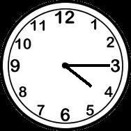
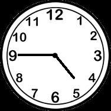
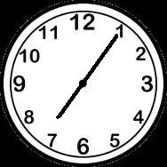
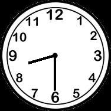

Exerciții și lecturi
Activitatea 173 — Lecția 028, exercițiul 006
Revino la lecție pentru explicații și exemple. Completează activitatea înainte de a consulta răspunsurile.
Revino la Numeralele Revino la A rendőrségen / La polițieRăspundeți la întrebarea Hány óra (van)? , mai întâi în limbajul oficial, apoi în cel curent. Pentru ora oficială, scrieți la alegere cea de dinainte de masă sau cea de după-masă, folosind totdeauna cuvântul corespunzător lui „minut”.
|
 |
||||
|
 |
||||
|
 |
||||
|
 |
Vezi răspunsurile
- négy óra tizenöt perc / tizenhat óra tizenöt perc
- negyed öt
- négy óra negyvenöt perc / tizenhat óra negyvenöt perc
- háromnegyed öt
- hét óra öt perc / tizenkilenc óra öt perc
- öt perccel múlt hét
- nyolc óra harminc perc / húsz óra harminc perc
- fél kilenc